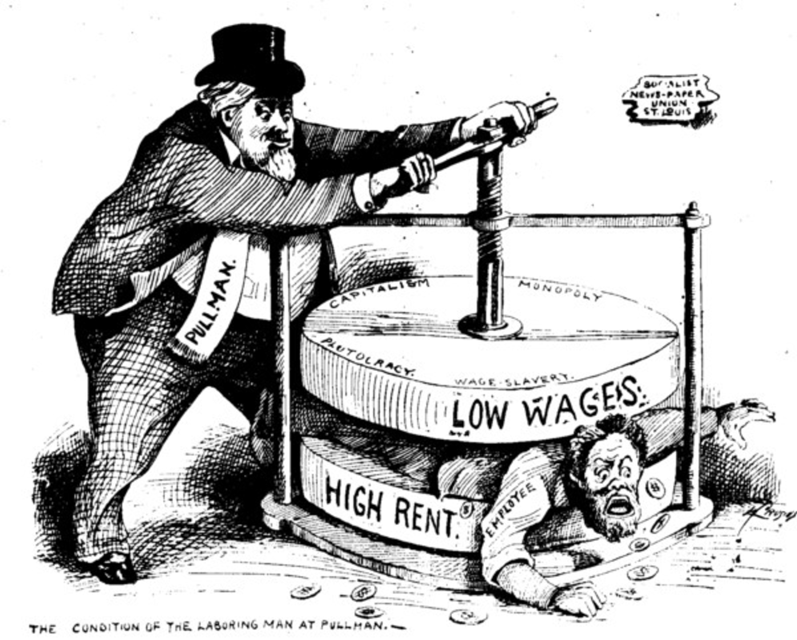

Welcome · Save your work
Use your established classroom alias (not your name or school ID). The same alias lets you resume from another device. Do not start answering before your work is loaded.
1 · Thinking Is Fun! 10 minutes · Discuss
“I would ___ because the most important concern is ___.”“Although ___ could happen, I would choose ___ because ___.”
2 · Investigate the photographs 15 minutes
First , then interpret. These are historical photographs, not invented scenes. Click Enlarge to inspect details. Choose two photographs and observe them before using their source captions.



“In image ___ I notice ___, which suggests ___.”“The images suggest ___, but they cannot establish ___ without additional evidence.”
3 · Story One: The Jungle 22 minutes · Close reading
Central puzzle: What happens when a reformer exposes one problem, but the public reacts most strongly to another?
Beginning · Conditions in meatpacking
In the early 1900s, large meatpacking plants processed enormous quantities of food. Workers often performed exhausting and dangerous jobs, and many lacked economic security. was one of the problems reformers wanted Americans to confront. As industrial businesses expanded, government oversight varied and was often limited.


Middle · Sinclair writes a novel
Writer Upton Sinclair investigated Chicago's meatpacking industry and published The Jungle in 1906. His book followed a fictional immigrant family and described brutal working and living conditions. Although Sinclair wanted to generate concern about workers and the economic system, many readers focused instead on the book's descriptions of food contamination and unsanitary processing. A vivid story helped bring industrial conditions to a broad audience, though a novel is not the same kind of evidence as an official inspection report.
Upton Sinclair's later reflection on the public response. We'll use the quote to distinguish an author's from an outcome.
End · Rapid regulation, incomplete reform
Public concern, earlier food-safety campaigns, and federal investigations helped create momentum for the Meat Inspection Act and Pure Food and Drug Act of 1906. Both expanded federal regulation, especially protection for consumers. But those laws did not directly resolve the labor problems that had motivated Sinclair. Organized workers, advocates, and lawmakers continued fighting over working conditions and business power. The story demonstrates that exposing a problem can help produce change while leaving the original injustice partly unresolved.
“Sinclair wanted ___, but the response led to ___.”“Although reform addressed ___, it left ___ unresolved because ___.”
Historical context: FDA history · National Park Service: Sinclair
4 · Story Two: Lewis Hine and child labor 20 minutes
Another path to reform: Photographer Lewis Hine worked with the to document children working in mills, mines, factories, and streets. Reformers combined photographs, research, public campaigns, and organizing. Child labor protections expanded, but major federal reform came slowly and faced legal challenges.
“Photographs made ___ visible, but changing ___ required ___.”“Even though reformers gained ___, the timeline reveals that ___.”
Sources: Library of Congress NCLC collection · U.S. Department of Labor
5 · Whose side is government on? 10 minutes
Return to our earlier labor lessons. Government intervention did not always mean government sided with workers. Compare three responses to pressure.
6 · Farmers, voting, and pressure 5 minutes
Before the famous muckraking campaigns, Populist farmers challenged rail costs, debt, and powerful financial interests. They formed alliances, organized, published arguments, and supported political candidates. Voting offered another route to influence—but access to the ballot was unequal, and elections did not guarantee that officials would act as reformers hoped.
Real movements do not always follow these steps in order. People may organize before journalists report; reform can come before, after, or without a particular election.
7 · Then and now 8 minutes
Investigative reporting in 2023 documented migrant children working in dangerous jobs in the United States, even though federal child labor protections have existed for decades. This is evidence of both and : laws and many conditions improved, yet violations still occur. A detected violation does not tell us the total number of violations.
For independent context: 2023 investigation by Hannah Dreier · Department of Labor
“In ___, pressure led to ___, while in ___, reform took longer because ___.”“Comparing ___ with ___ shows that exposure alone ___; the interests of ___ also mattered because ___.”
Last 10 minutes · Separate Google Form
Your teacher will share a seven-question, all-multiple-choice Google Form to check the main historical ideas. This is separate from the HTML assignment. Save and download your work before submitting your PDF in Classroom.
Finish & protect your work
Your completion percentage counts required response fields. It does not judge the historical quality of your reasoning.
Your local copy is kept on this device. Only "Cloud verified" confirms that an identical snapshot reached the Sheet. If the cloud is unavailable, save an Emergency PDF before closing the page.